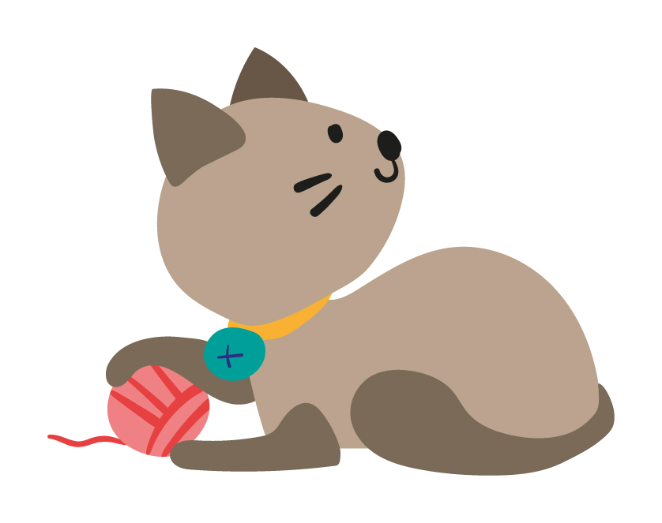
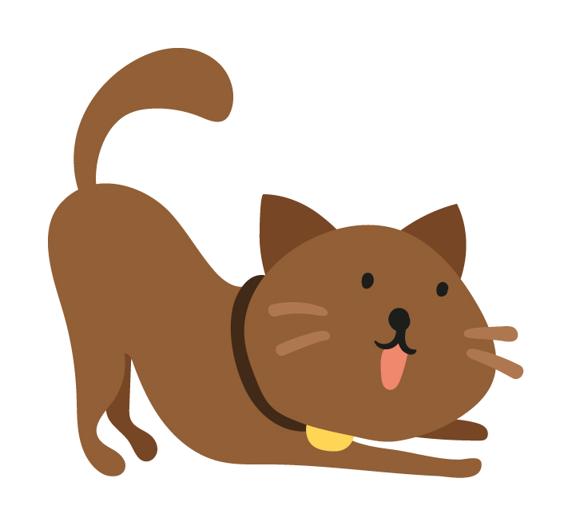
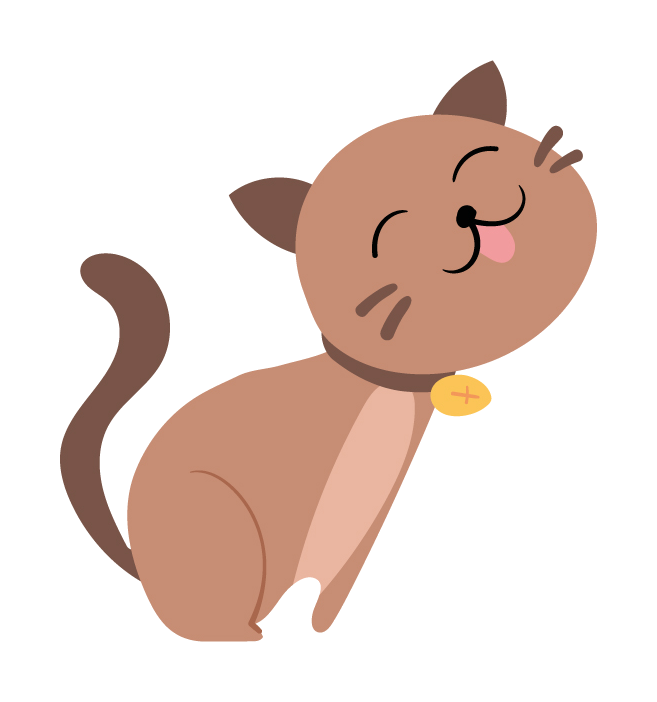
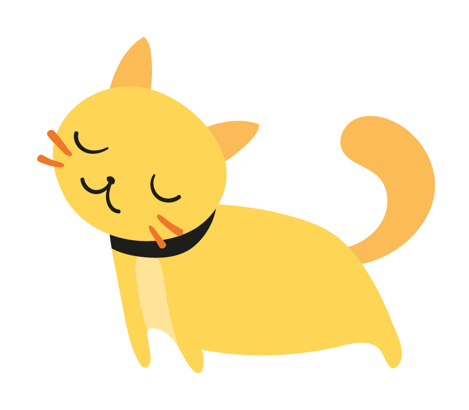
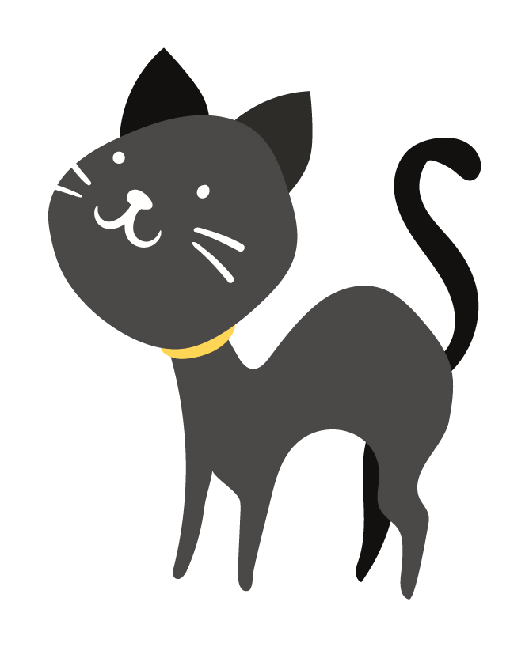
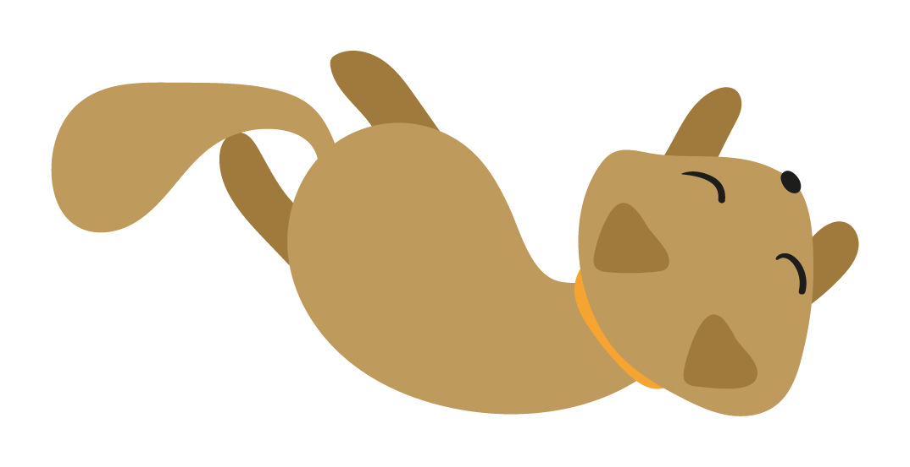

★★★★★
Super recomendo! Fomos atendidos pela Jéssica, um doce de pessoa. Muito atenciosa e cuidadosa com meus filhos e com meu lar. Recomendo de olhos fechados!
Cat sitter domiciliar em Porto Alegre. A gente vai até você e cuida do seu gatinho com amor, responsabilidade e relatório diário com fotos.
Seu gato fica no conforto da casa dele, sem estresse e sem trauma.
Seu gato fica no território dele, sem trauma de transporte nem ambiente desconhecido.
Horários de comida, brincadeiras e sonecas mantidos exatamente como ele gosta.
Você viaja tranquila e acompanha tudo pelo WhatsApp. Nenhum momento perdido.
Ficha de cuidados individual para cada gatinho — rotina, alimentação e medicamentos.

Simples, seguro e tranquilo para você e seu gatinho.
Manda mensagem no WhatsApp, conta sobre seu gatinho e a data que precisa. Tiramos todas as dúvidas.
A gente vai até você, conhece o gato e preenchemos a ficha de cuidados juntos, com calma.
Cada visita tem foto e vídeo enviados pelo WhatsApp. Você acompanha tudo em tempo real.

Cuidado profissional e amoroso para o seu gato, na casa dele.
⏱ 1 hora de cuidado exclusivo

Olá! Somos a Guria dos Gatos, uma equipe de cat sitters apaixonadas por felinos em Porto Alegre. Sabemos que deixar seu gatinho é sempre uma decisão difícil — por isso tratamos cada pet como se fosse nosso.
Com experiência em cuidar de gatos com necessidades especiais, administração de medicamentos e muito carinho, nossa missão é que você viaje tranquila sabendo que seu bichinho está em boas mãos.

Avaliações reais de tutores de Porto Alegre — verificadas no Google.
Super recomendo! Fomos atendidos pela Jéssica, um doce de pessoa. Muito atenciosa e cuidadosa com meus filhos e com meu lar. Recomendo de olhos fechados!
Tive uma primeira experiência excelente com a Guria dos Gatos! Quem cuidou do meu gato foi a tia Maitê. Ela é muito atenciosa, carinhosa e tem bastante experiência em ministrar medicamentos, tudo o que o Gandalf precisava! Isso sem falar nas fotos e vídeos que ela manda, que são maravilhosos. Recomendo demais!
Indico muito o trabalho delas! A cat sitter Maitê cuidou da minha gatinha idosa, dando soro subcutâneo e medicações, durante muitos meses com toda a paciência do mundo. Confio qualquer um dos meus gatinhos nas mãos das gurias da empresa, são profissionais maravilhosas, que conhecem bem os gatos e amam o que fazem!

Tudo o que você precisa saber antes de agendar.
Em caso de emergência, entramos em contato imediatamente com você e, se necessário, levamos o pet ao veterinário de sua preferência ou indicamos uma clínica próxima. Por isso pedimos o contato do seu vet na ficha de cuidados.
Sim! Atendemos todos os dias da semana, incluindo feriados e fins de semana. Entre em contato para verificar a disponibilidade nas datas desejadas.
Sim! Temos experiência com administração de medicamentos orais e soro subcutâneo. Todas as informações são registradas na ficha de cuidados antes do início do serviço.
Em cada visita você recebe fotos e vídeos do seu gatinho diretamente pelo WhatsApp. Assim você acompanha tudo em tempo real, de onde estiver.
Sim! Preenchemos juntos uma ficha de cuidados com rotina, alimentação, medicamentos, veterinário de preferência e contato de emergência. Isso garante segurança e tranquilidade para todos.
Atendemos em Porto Alegre – RS. Entre em contato pelo WhatsApp informando seu bairro para confirmar a disponibilidade na sua região.
